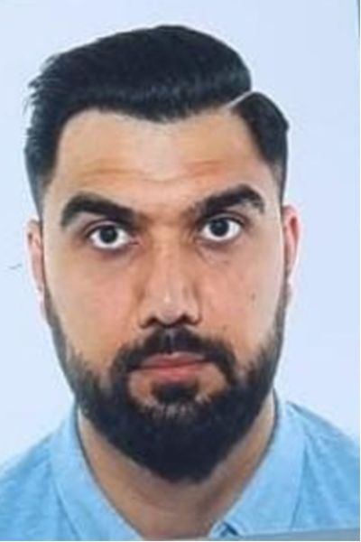

Eshaq Safi

I am an undergraduate student at Laurea University of Applied Sciences, pursuing a Bachelor's degree in Business Information Technology with a focus on Digital Services, expected to graduate in 2026. My goal is to secure a frontend development position and grow into a full-stack developer, leveraging my technical skills, problem-solving abilities, and strong work ethic. I bring a unique blend of technical knowledge, business acumen, and teamwork, backed by my experience as a professional basketball player and a commitment to continuous learning.
Education
Bachelor of Business Information Technology – Digital Services (Laurea University of Applied Sciences, Espoo, Finland) – Expected Graduation: 2026
Work Experience
- Translator – Saviiare Oy
- Translated books and articles from Farsi and Pashto to English and Finnish.
- Contributed to content related to climate change and sustainability topics.
- Security Guard
- Ensured client safety through excellent customer service and proactive security measures.
- Managed and responded to security alarms efficiently across multiple locations.
- Collaborated with security centers for incident management and criminal apprehension.
Skills
- Frontend Development: HTML, CSS, JavaScript (In Progress)
- Proficient in Microsoft Office Suite (Word, Excel, PowerPoint)
- Business Startup and Entrepreneurship Knowledge
- Strong Communication and Teamwork Skills
- Professional Basketball Background – Discipline and Leadership
Awards and Certifications
- Outstanding Performance Award – Professional Basketball: Recognized for leadership, teamwork, and dedication in professional sports.
- Frontend Development Fundamentals Certification: Completed courses in HTML, CSS, and JavaScript, showcasing a solid foundation in web development.
Contact